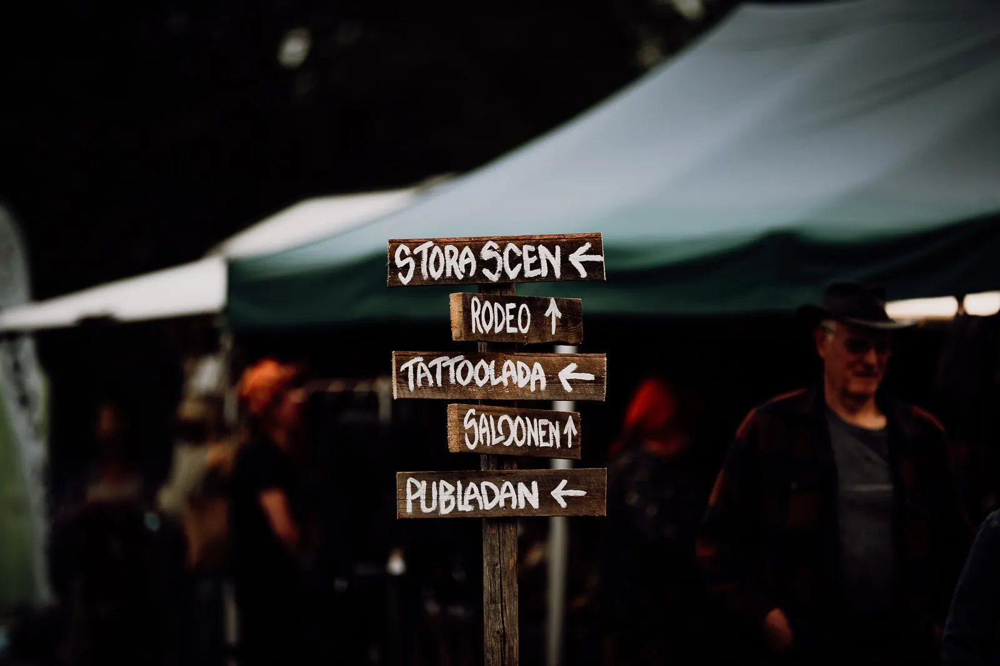

Innan du åker
Praktisk info
Allt du behöver veta innan du sätter på dig hatten.
Hitta hit
Boggbergets festplats
Evertsberg, Älvdalen. Uppe på berget, cirka tolv kilometer från Älvdalens centrum.
- Torsdag 1 juli
- SmygstartTider släpps senare
- Fredag 2 juli
- Nu river vi igångTider släpps senare
- Lördag 3 juli
- Draaaag!Tider släpps senare
- Adress
- BoggbergetEvertsberg, Älvdalen
På plats
På området
Festivalområdet
Tre scener: Utescenen, Rotundan och Publadan. Cowboyrestaurang, pop up-butiker och aktiviteter. Två barer, matförsäljning och WC.
Parkering
Parkering finns på campingområdet. Skulle den bli full erbjuder vi parkering vid Evertsbergs bygdegård, med transfer upp till Boggberget.
Campingområdet
Plats för husvagnar och tält, med WC, pop up-butiker och mat. Bevakat av festivalvärdar dygnet runt. Mer om boende.
WC & bajamajor
Inne på festivalområdet finns WC och på campingområdet finns bajamajor. Duschar finns vid Evertsbergs skola.
Grilla
Det finns grillplatser på campingområdet som är till för grillning. Egna grillar får inte användas.
Butiker
En och en halv kilometer bort finns en butik som har öppet 19 timmar om dygnet. Du handlar enkelt via en app. I Älvdalen, tolv kilometer bort, finns butiker, restauranger och boende.
Säkerhet
Vi vill att alla ska känna sig trygga och är rustade för olyckor och brand. Sjukvårdspersonal finns på plats.
Borttappat
Upphittade saker finns att hämta i entrén.
Hörselskydd
Tänk på att skydda små öron. Använd hörselskydd på mindre barn.
Ålder & entré
Vem kommer in?
Barn under 12
Går in gratis i målsmans sällskap.
Från 12 år
Alla över 12 år betalar ordinarie pris. Köp gärna i förköp, så är din plats säkrad och vi kan planera bättre.
Dagtid
Dagtid är alla åldrar välkomna på festivalområdet, även du som är under 18.
Kvällstid
På kvällen är det 18-årsgräns. Ta med leg. Exakta tider släpps senare.
65 och 80 år
Alla över 65 år har rabatt. Alla över 80 år går in gratis!
Återköp
Vi gör inga återköp på biljetter eller camping, men du får sälja dem vidare. Säljer du en campingplats, mejla den nya ägarens uppgifter till howdy@rivervalley.se.
Regler
Så funkar det
Vad får jag ta med?
Campingstolar och filtar får gärna följa med! Egen alkohol på festivalområdet är lika med hemgång.
Hundar
Hundar är välkomna på området. Självklart tar du hand om både jycke och bajskorvar.
Rökning
Rökning är förbjuden på festivalområdet. På campingområdet röker du med förnuft: tänk på andras hälsa och brandrisken, och släng inte fimpar på marken.
Hittar du inte svaret? Mejla howdy@rivervalley.se eller ring Hannah på 073-649 30 50.